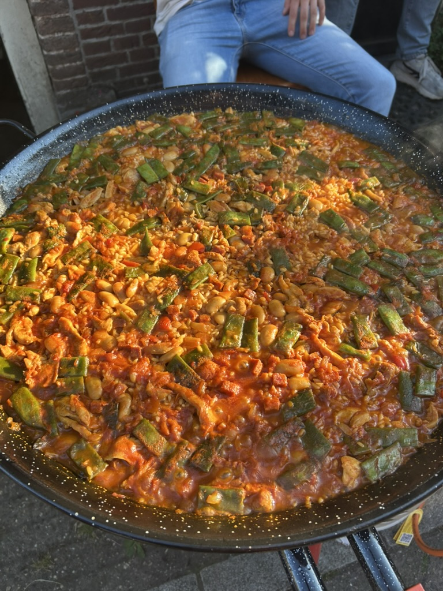

Portfolio
Paella met chorizo en kip
Deze paella met chorizo en kip maak ik met sappige kipdij, een rokerige chorizo, knapperige snijbonen en grote witte bonen, zoals in een paella valenciana. De basis is een lang gestoofde sofrito, echte saffraan en Bomba-rijst.
Bomba neemt veel bouillon op zonder papperig te worden. Zo krijg je losse, smaakvolle korrels en onderin de pan een knapperige socarrat.
Tip: reken bij Bomba-rijst op ruim drie keer zoveel bouillon als rijst, en houd 200 ml hete bouillon achter de hand voor als de rijst nog te stevig is.
Ingrediënten
- 900 g kipdijfilet, in grove stukken
- 200 g chorizo (curado), in halve maantjes
- 300 g snijbonen, in stukken van 4 cm
- 400 g gekookte grote witte bonen (garrofó of boterbonen), uitgelekt
Sofrito
- 2 uien, fijngesnipperd
- 1 rode paprika, fijngesneden
- 4 tenen knoflook, fijngehakt
- 6 el olijfolie
- 1 el gerookt paprikapoeder (pimentón de la Vera dulce)
- 400 g Mutti Polpa (fijngehakte tomaten)
Rijst
- 500 g Bomba-rijst
- 1,6 liter kippenbouillon
- 0,5 g saffraan (een flinke snuf draadjes)
- zout en peper
- 1 citroen, in partjes
Bereiding
- Verwarm de kippenbouillon en laat de saffraan er minstens 15 minuten in trekken. Houd de bouillon heet.
- Breng de kip op smaak met zout en peper en bak hem goudbruin in de olijfolie in een paellapan van 46 tot 50 cm. Schuif de kip naar de rand.
- Bak de chorizo 2 minuten in het midden van de pan tot het rode vet loslaat. Bak de snijbonen 3 tot 4 minuten mee.
- Voeg ui, paprika en knoflook toe en fruit alles in 15 minuten zacht en jammy. Roer het paprikapoeder er 30 seconden door, niet langer, anders wordt het bitter.
- Voeg de Mutti Polpa toe en laat 5 minuten inkoken tot een dikke, donkere saus.
- Strooi de Bomba-rijst erover en roer 1 minuut, zodat elke korrel met sofrito bedekt is.
- Giet de hete saffraanbouillon erbij en schep de witte bonen erdoor. Proef en breng op zout: de bouillon mag iets zouter zijn dan je denkt. Verdeel de rijst gelijkmatig en roer vanaf nu niet meer.
- Kook 10 minuten op hoog vuur en daarna 8 tot 10 minuten op laag vuur, tot de bouillon is opgenomen.
- Zet het vuur de laatste 1 tot 2 minuten hoog, tot de bodem knispert en licht geroosterd ruikt: dat is de socarrat.
- Dek de pan af met een schone theedoek en laat 5 tot 10 minuten rusten. Serveer met partjes citroen.